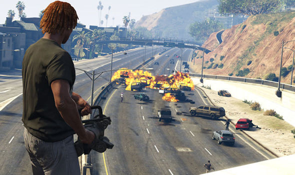

La última gran entrega de la saga de Rockstar. Grand Theft Auto V es más que nunca un juego para todos los gustos. Te ofrece dos grandes experiencias claramente separadas y definidas entre sí.
Por un lado tienes la parte de la historia, el modo offline con misiones para un jugador. Por otro está el aclamado GTA Online, una experiencia totalmente independiente.
Consejos y preguntas frecuentes
Trucos para GTA 5: el juego tiene una buena cantidad de trucos y códigos, completamente lícitos (no hay sanciones por usarlos), que pueden hacer las cosas más divertidas, pero cuidado. Puedes guardar la partida después de activarlos, pero no conseguirás logros/trofeos mientras estén en funcionamiento. Los trucos se desactivan introduciendo el código por segunda vez.
No gastes, invierte: especialmente en GTA Online, uno de tus principales objetivos es acumular dinero. Tu dinero debe generar más dinero. Sobre todo al principio intenta no gastar en tonterías: acumula hasta tener al menos $50.0000 para hacerte VIP y poder aceptar encargos especiales. Por lo demás, hay muchísimas maneras de hacer dinero rápido (relativamente). Encuentra la que más se adapte a tu estilo, aunque, en cuanto puedas, la mejor opción es la bolsa.
No hagas trampas online: desconfía de los que te hablen de victorias fáciles, de dinero infinito sin mover un dedo y demás cosas. Te puedes encontrar con una expulsión antes de lo que tardas en decir "hack".
No te metas en peleas en GTA Online: al menos al principio, huye de los enfrentamientos. Esto es muy de Capitán Obvio, pero el nivel de los jugadores influye en tus opciones a la hora de salir con vida de un tiroteo.
Permanece atento al móvil: tanto jugando en solitario como en GTA Online, el móvil será tu principal contacto con lo que pasa con el mundo. Eventos, nuevos objetos, ofertas...

GTA Online
Cuando te consideres preparado, adéntrate en GTA Online. Aquí no hay guía que valga, el juego está en constante expansión, en constante actualización, cambios todas las semanas, nuevos modos de juego, eventos, coches, armas, ropa, propiedades... la vida de tu avatar puede cambiar completamente de un día para otro. Más que nunca, presta atención al móvil para conocer todas las novedades.
Eso sí, ten en cuenta siempre que es conveniente que formes parte de un grupo habitual. Jugar con gente al azar no es tan efectivo como tener tu equipo frecuente. Hay montones de clanes y agrupaciones entre las que elegir, la inmensa mayoría muy activas. Recuerda que los eventos son temporales, y en ocasiones hay artículos que pueden dejar de estar disponibles en cuanto acabe tal o cuál evento.
Finalmente, no hagas trampas jugando online, te expones a un ban y borrado a perpetuidad de tu personaje si te apuntas a extraños sistemas de farmeo de dinero sospechosamente rápido.